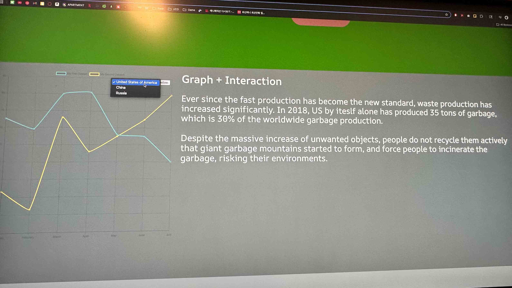
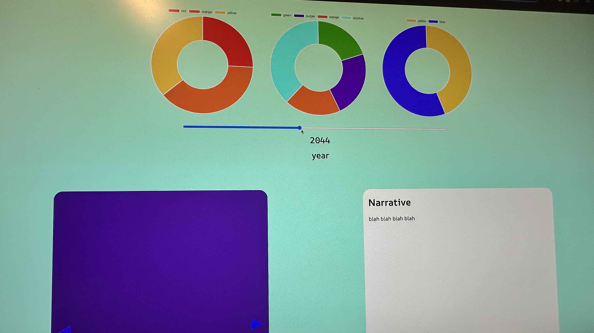

Images During Testing


Key Findings from the Testing
- Participants have missed the first interactive feature. I think this observation occured because there were no sub-text or guidance text for users to 'click' the section. In addition, the lack of anchoring on the area ressulted in users 'slipping' away from the section.
- Participants were confused on the product detailed information interactive section, especially after when they opened a section. I think this observation occured because there were no dedicated close buttons on the sections.
- The participants experienced a difficulty on reading the line graph because the colors for the grid of the graph is similar to the background color.
Reflection from the Testing
The participants mostly interacted the project as expected: scrolling down and interact each section in an intended order. However, I noticed that all participants skipped the first section and some of the animations were already finished when the users reached the section. When I asked the participants' impression on the project, they all said the same expression: "we should take our attention to our garabage and start recycle, or else we will end up in a future where we eat our own garbage."
After performing the usability testing, here are planned modifications for future versions:
- Add the 'ending' section
- Feature that triggers the animaiton when a section is in the scope
- Sub-text for the first section to ensure users start the website by clicking the section and trigger the hidden animation